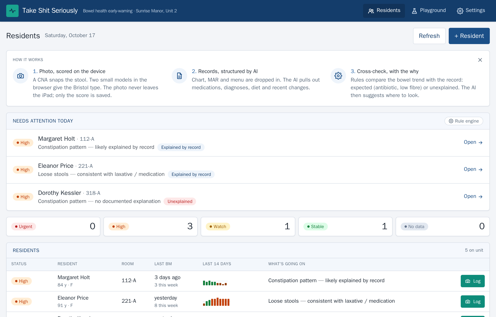
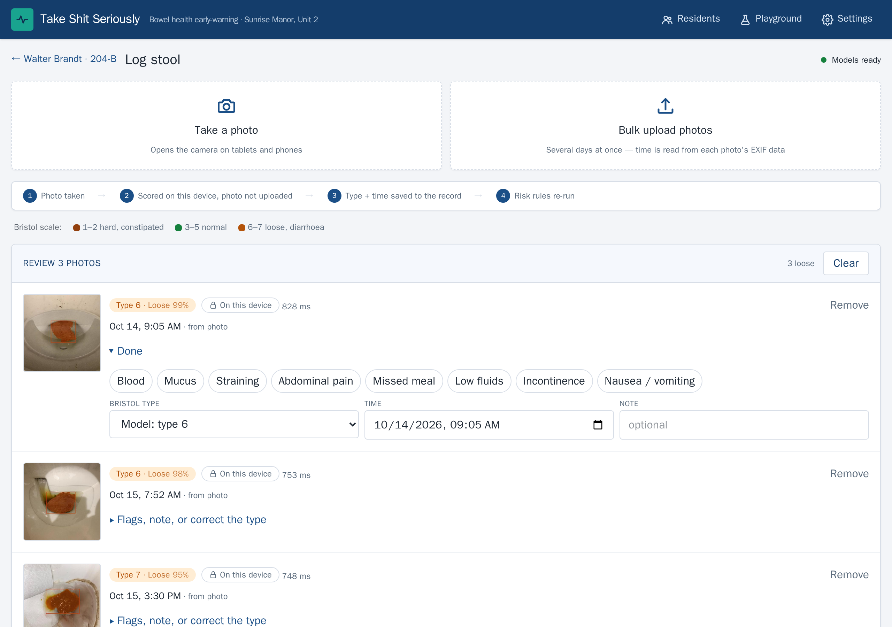
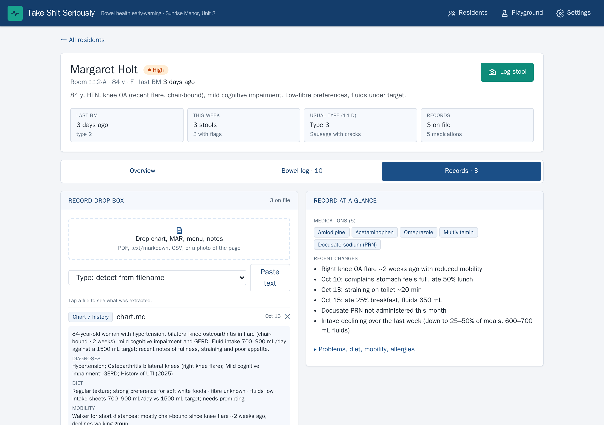
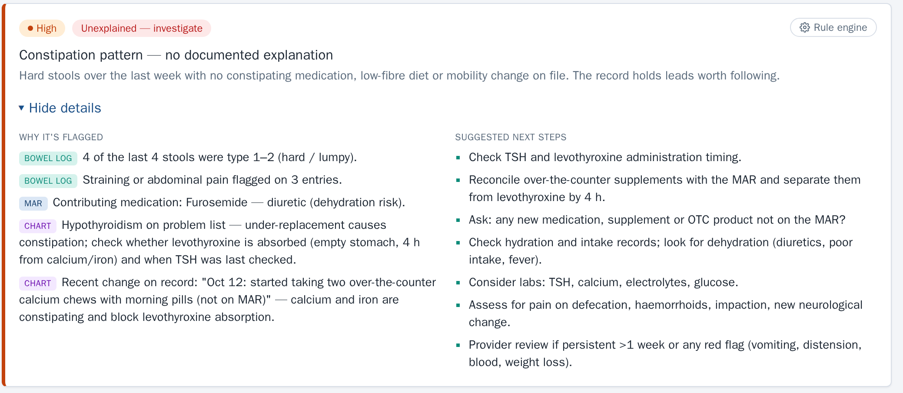
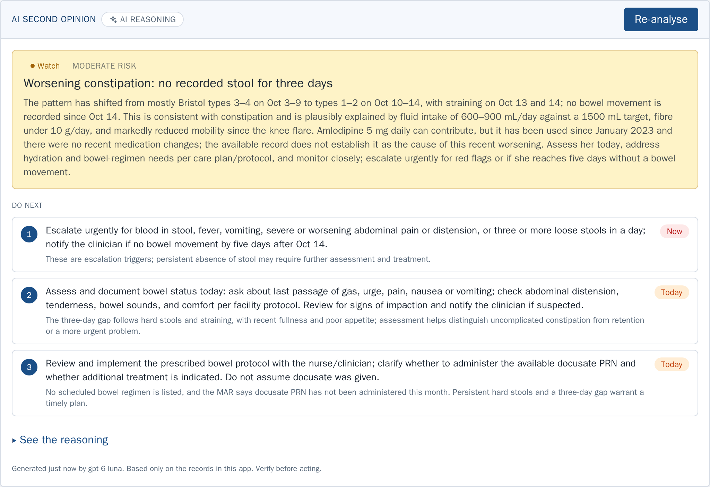
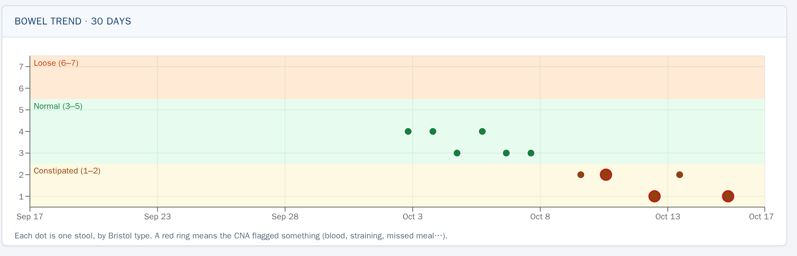
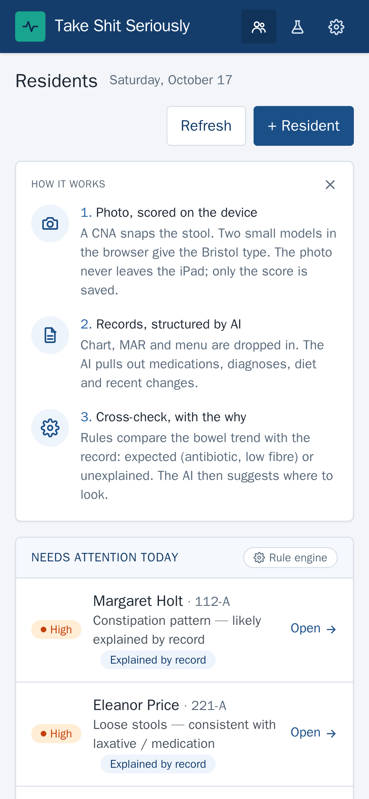
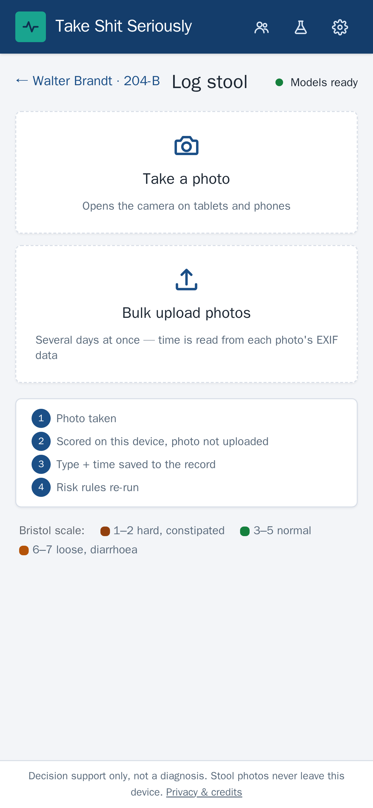

Take Shit Seriously.
Bowel-health early warning for long-term care teams. A photo on the unit iPad, scored on the device, cross-checked against the resident's own record. The problem gets found on day two, not day six.
The problem
The first sign something is wrong is in the toilet. Nobody is looking.
In a nursing home, bowel trouble is the most common thing on the unit and the least-loved line in the chart. The numbers are not subtle.
Why it matters
A hard stool on Monday is a hospital bed on Saturday.
Hard stools, straining
Bristol type 1–2 (the 1–7 stool scale; 1–2 means hard). A CNA, the frontline care aide, notices. Maybe it gets charted.
Nothing documented
Appetite drops, fluids drop. The record has no bowel entry for days.
Delirium, falls
of delirium on a geriatric ward was attributed to constipation.
Dehydration admission
of care-home admissions arrive hypernatraemic (severely dehydrated) vs 1.3% from own homes. 50% more likely to die.
Loose stools, C. diff
US deaths a year from 453,000 C. diff infections (a gut bug that spreads through care homes). Three in four cases start outside a hospital. ~$21k per case.
Sources on the last slide. Day numbers are illustrative; the figures are from the cited studies.
Why it gets missed
The bowel chart is a paper tick-box filled in by the busiest person in the building.
"There was no documentation of a bowel movement from April 1–7, 15–22, 25–30 or treatment for constipation."State survey finding (CMS-2567), Indiana nursing home, 2019. A New York survey found fifteen CNAs had failed to document bowel movements (BMs) for one resident.
BOWEL MOVEMENT RECORD · ROOM 318-A · APRIL
| Date | 1 | 2 | 3 | 4 | 5 | 6 | 7 | 8 | 9 | 10 |
|---|---|---|---|---|---|---|---|---|---|---|
| Type | 4 | 3 | — | — | — | — | — | 2 | — | — |
| Init. | JM | JM | RK | |||||||
| Flags | strain |
The idea
Make the chart fill itself in, then check it against the record.
One photo replaces the tick-box. The model gives the Bristol type (the 1–7 stool scale). The rules engine asks the only question that matters: does the record explain this, or not?
Snap
CNA photographs the stool with the unit iPad, or bulk-uploads a few days at once. Time is read from the photo's EXIF metadata.
Score
Two small YOLO vision models (they outline the stool, then classify it) run in the browser. Bristol group plus exact type. The photo never leaves the device.
Read the record
Chart, MAR (medication record) and menu are dropped in. An LLM structures them into meds, diagnoses, diet, mobility, recent changes.
Cross-check
Plain-code rules, no AI, same answer every time. They compare the bowel trend with the record and say expected or unexplained, with the why and next steps.
The unit view
Who needs attention today.
The home screen a charge nurse opens at 7am. Status per resident, 14-day sparkline, and one line of plain language on what's going on.


Capture
Snap. Scored before you put the iPad down.
Two YOLO26n-seg models in onnxruntime-web, so the AI runs inside the browser with no server. Bristol group is the headline; the exact type is shown only when the model is confident. Quick-tap flags for blood, straining, missed meals. The nurse can override the type.
The record
Drop in the chart, the MAR, the menu.
PDF, pasted text, or a photo of the page. PDFs are parsed on the device; the model structures the text into medications, diagnoses, diet, mobility and recent changes. Strict JSON schema (the model must fill a fixed form), no free-text guessing.

The important one
"Constipated, and nothing in the record explains it."
A deterministic rules engine, not a vibe. Margaret is constipated because of amlodipine (a blood-pressure drug that constipates), white bread and a knee flare: expected, manage it. Dorothy is constipated on a high-fibre diet, fully mobile, no constipating meds: that one needs a human today. The engine still mines her record for leads.

AI second opinion
Then the LLM reasons over all of it.
Log plus record plus rule findings. It returns expected vs unexpected observations, likely causes, prioritised actions with a "now / today" tag, questions for the team, and the gaps in the data. Every claim is grounded in the records on file.
- !Escalation triggers first. Red flags before routine steps.
- ?Questions for the team. What the record can't answer.
- ≡Shows its reasoning. Model name and timestamp on every analysis.


Trends
The drift is the signal.
Normal for two weeks, then a slide into types 1–2 with flags. Entries live in a TimescaleDB hypertable (a table built for time-stamped data) on Tiger Cloud with per-day rollups, so the 30-day view is one query per resident.
The models
Two tiny models, trained this weekend, better on real phones with every pass.
YOLO26n-seg at 640 px, exported to ONNX (a portable model format), running in the browser. v4 added 232 crowd-sourced phone photos, pseudo-labelled by v3 (v3 drew the first-pass labels, we checked them). Measured on photos never used in training.
Per-photo accuracy on crowd-sourced phone photos
73 photos, Bristol-Stool-Boost valid + test, never seen in training. Top detection vs label.
Honest caveat: hard stools on real backgrounds are still the weak spot (5 of 11 correct). On the curated test split the headline model is at 82%.
How it's built
Photos stay on the device. Scores go to the cloud.
Privacy & safety
Built for a room where the data is someone's grandmother.
- ✓Chart photos go to the vision model for transcription but are not stored; only the extraction is.
- ✓Rules first, LLM second. The deterministic engine never needs a network call and is auditable line by line.
- ✓Nurse override on every entry. The model suggests; the human charts.
Why it fits
Looks like the software they already use.
The UI is PointClickCare-shaped on purpose: PCC sits in roughly 60% of US skilled nursing facilities. A CNA should not need training. No login for the demo, one facility roster, works on the unit iPad, a phone, or the nurses' station laptop.
- 1Next: EHR hooks. Push entries into PCC/MatrixCare as bowel-chart rows; pull the MAR instead of dropping it in.
- 2Next: more real photos. Hard stools on real backgrounds are the weak spot. A consented pilot fixes that fastest.
- 3Next: unit-level alerts. Two loose-stool residents on one hall in 48 h is an outbreak question, not a resident question.


The ask
Take shit seriously.
A nurse opens the app, sees "unexplained", checks the over-the-counter calcium, fixes the thyroid-pill (levothyroxine) timing.
An ambulance, a dehydration admission, and a chart that says nothing for a week.
Sources for the numbers in this deck
71% chronic constipation — EHR cohort of 126 US nursing homes, 2016 (MDS indicator and/or chronic laxative use), PMC10642798. 70.7% in a nation-wide study of 34 Spanish nursing homes, PMC4141793.
47% report fecal impaction — same Spanish study (patient history; 6.6% on rectal exam).
67% regular laxatives — Blekken et al., interRAI LTCF, 261 Norwegian residents, Gastroenterol Res Pract 2016.
11% of delirium — internal-medicine ward letter cited in the fecal-impaction literature, PubMed 28181648.
12% vs 1.3% hypernatraemia, 50% more likely to die — Oxford / LSHTM review of ~21,600 admissions, reported via The Good Care Group.
453,000 infections, 29,300 deaths, 24% hospital-onset — Lessa et al., NEJM 2015;372:825-34, CDC stacks. ~$21k per case — meta-analysis of 42 studies, 2015 USD, BMC Infect Dis 2016.
90% of homes understaffed, 24% shortfall, 31% weekends — LTCCC staffing alerts Q2/Q3 2025, nursinghome411.org.
Inspection quotes — Indiana CMS-2567 survey, in.gov; New York plan of correction, health.ny.gov.
Opioids — 32% of LTC residents 65+ received an opioid; 40–86% opioid-induced constipation, Drugs Aging 2016.
PointClickCare ~60% of US SNFs — company claim, repeated in KLAS coverage, HIT Consultant.
Model accuracy — measured Oct 17 2026 on held-out photos; see README. Training data: smartgut "stool classification" (Roboflow, CC BY 4.0) + Bristol-Stool-Boost (licence unverified).